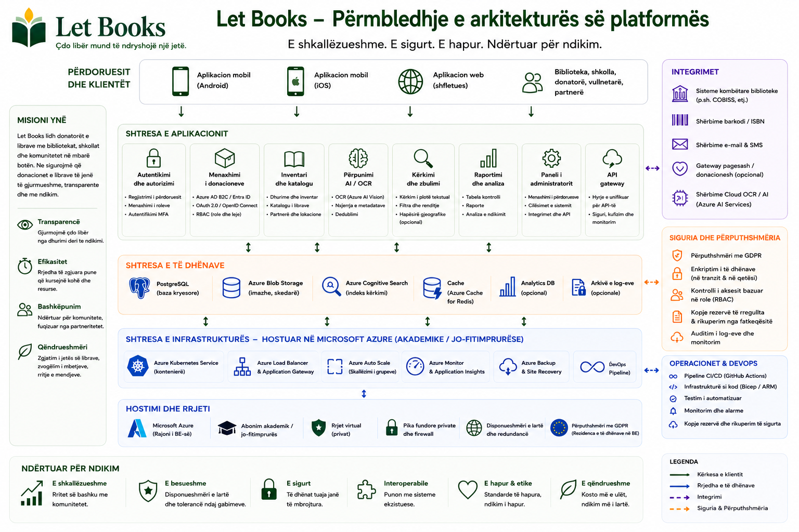

Shembujt e hostimit dhe menaxhimit përshkruajnë drejtimin e arkitekturës dhe rregullave, por nuk nënkuptojnë zbatime të certifikuara ose përgjegjësi ekzistuese prodhimi.
Udhëzues për administratorë
Harmonizoni aksesin, privatësinë dhe logjistikën që nga fillimi.
Let Books duhet të jetë i dobishëm për një donator privat, shoqatë ose një pritës institucional të ardhshëm. Prandaj administratorët kanë nevojë për rregulla të qarta për përdoruesit, tenants, rolet, vendndodhjet dhe përdorimin opsional të AI.

Çfarë menaxhojnë administratorët
- Aksesin e miratuar dhe anëtarësimet
- Tenants dhe rolet
- Strukturën e vendndodhjeve dhe rrjedhat e donacioneve
- Kufijtë e privatësisë dhe auditimin
- Cilësimet opsionale për AI, OCR dhe përkthim
Çfarë duhet shmangur
- Akses që mbështetet vetëm te hyrja e jashtme
- Zbulim publik i vendndodhjeve të sakta të ruajtjes
- AI me pagesë të detyrueshme në rrjedhat bazë të punës
- Përzierje e kopjes fizike me metadata të pastra
Modeli i aksesit
Autentikimi mund të vijë nga ofrues të jashtëm identiteti, por autorizimi duhet të mbetet nën menaxhimin e aplikacionit.
Hyrje të miratuara
Zbatimet e hershme ose private duhet të kufizojnë aksesin te përdoruesit e miratuar paraprakisht.
Anëtarësime në tenants
I njëjti përdorues mund të marrë pjesë në më shumë se një tenant me role të ndryshme.
Shikueshmëri sipas rolit
Rishikuesit nuk duhet të shohin automatikisht shënime private ose detaje të shtëpisë së donatorit.
Privatësia dhe menaxhimi
Vendndodhjet e sakta, shënimet private dhe të dhënat e kontaktit duhet të mbeten të kufizuara. Eksportet, importet, ndryshimet e roleve dhe kërkesat e ardhshme për AI duhet të regjistrohen.
Drejtimi i zbatimit
Platforma duhet të punojë për një zbatim privat, por të mbetet e hapur për hostim institucional ose vetë-menaxhuar më vonë, me ruajtje të pavarur nga ofruesi.
Shembull: Një shoqatë e përdor Let Books për disa donatorë lokalë dhe biblioteka partnere. Një administrator miraton aksesin, çdo donator ka tenant-in e vet, ndërsa OCR mbetet i çaktivizuar derisa të ketë buxhet për të.